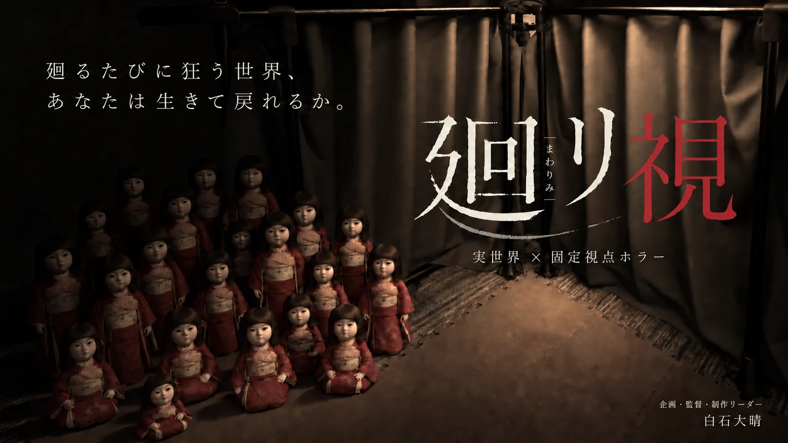
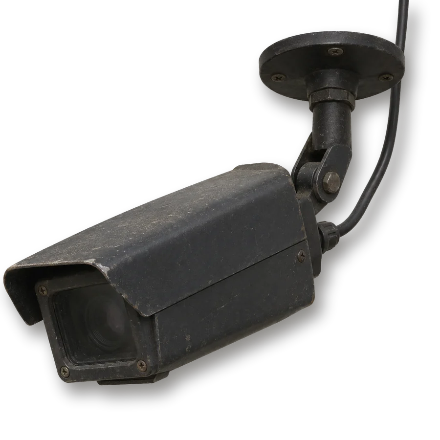
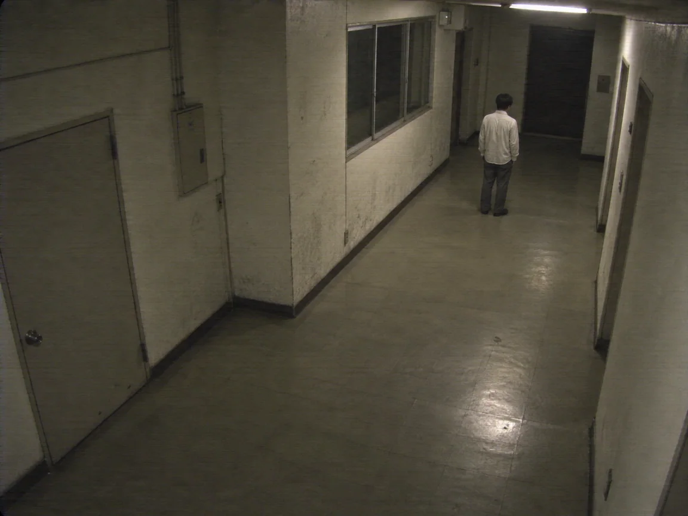
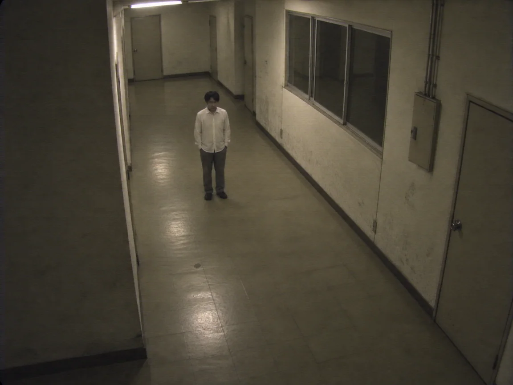
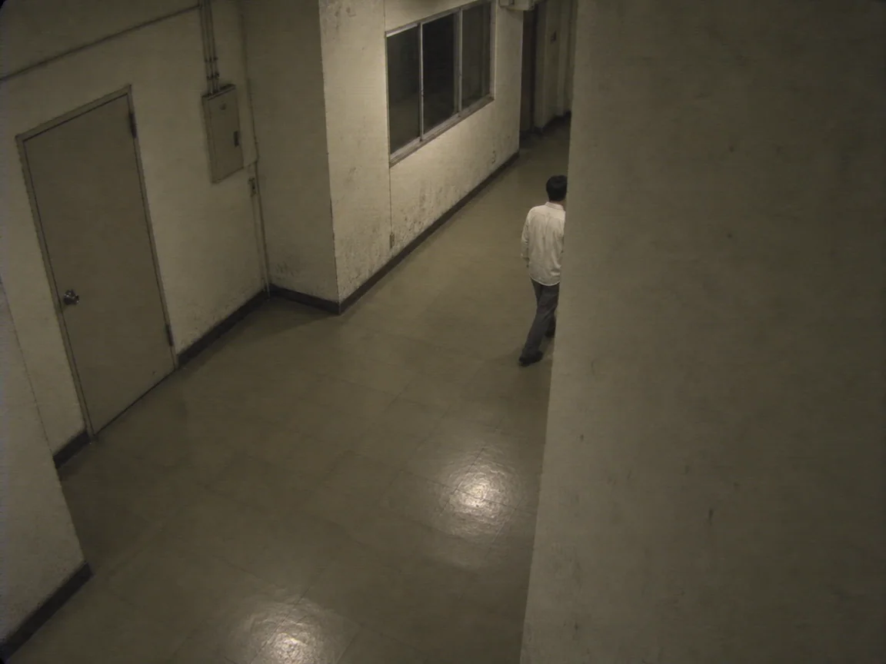

廻リ視（まわりみ）｜固定視点を用いた実世界ホラー体験

監視カメラに映る自分を見ながら、
現実の空間を歩くホラー体験。
- IVRC2026
- 総合優勝DCEXPO賞
- DCEXPO2026
- 展示予定
予告動画

固定視点とは
実世界×固定視点



カメラ 01
ストーリー
あなたは、怪異調査員として、
呪われた壁の調査に向かう。

演出一覧
ネタバレを含みます 演出を見る閉じる
導入
テレビが寄ってくる
暗闇の奥に黒いテレビが現れて、目の前まで寄ってくる。
PC上の再現映像 / 音声なし
明滅を含みます。
導入
暗闇の奥に黒いテレビが現れて、目の前まで寄ってくる。
テレビが点いて、監視カメラの映像が映る。
一周目
壁に、血の手形が滲む。
異変を報告すると、手形は消える。
二周目
幕に、顔のようなシミが滲んで広がる。
幕が膨らんで、笑う顔がせり出す。幕の縁から人形が覗く。
画面ごと、古い子供部屋へ飛ばされる。人形が畳に落ちて、首だけがこちらを向く。
人形の目線が割り込む。自分の背中が、近づいてくる。
画面が砂嵐になって、警告が出る。案内役の顔が人形に変わる。
三周目
部屋が伸び縮みして、傾く。
自分が立っているはずの場所に、人形が立っている。
一周目の録画が流れる。そこに居たのは、人形だった。
暗闇の奥から、テレビが次々に寄ってきて周りを埋める。
最後
画面の半分を、人形の群れが埋める。
案内役が、歩くのを止める。
最後の報告で人形が消えて、現実に戻る。
人形がこちらを向く。背を向けて、奥へ消える。
終幕
テレビの電源が落ちて、結果が出る。
報告しないまま歩き続けると、画面は黒に落ちる。
以前の版
目の前の現実が割れて、映像を映すスクリーンへ変わる。
視界に広がる警告。遮断しようとする表示も壊れていく。
スクリーンの外に現れる目。暗闇から、こちらを見ている。
展示履歴
-
IVRC2026
総合優勝DCEXPO賞
-
DCEXPO2026
展示予定
更新
クレジット
- 企画/監督
- 白石
- 論文/動画/Web制作
- 白石
- シナリオ/CG演出
- 白石
- サウンドデザイン
- 白石
- ビジュアルデザイン
- 白石
- ソフトウェア全般
- 白石
- 動く人形制作
- 五島
- 壁床制作
- チーム
- テスト/フィードバック
- チーム
- 設営/展示
- チーム
ソフトウェア実装にAIエージェントを活用し、要件定義・体験設計・動作検証は白石が担当しています。